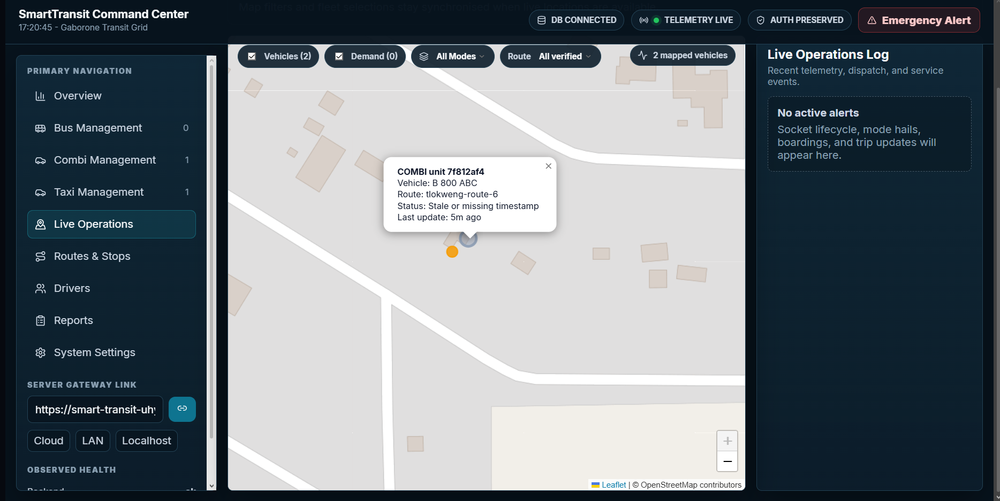
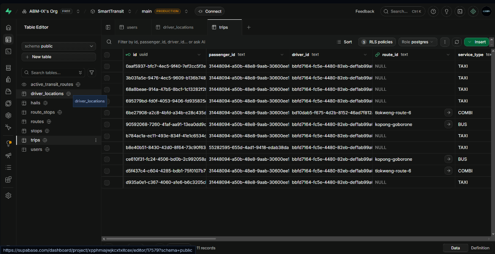

SmartTransit: A Real-Time Multi-Modal Intelligent Transport System for Gaborone

Greater Gaborone depends on informal and semi-formal services, including combis, shared taxis and regional buses. Unlike scheduled networks, many services operate with limited coordination and little live information for passengers or regulators. Across sub-Saharan African cities, paratransit carries a major share of motorized passenger trips (Cervero, 2000).
- Irregular service: Combis can bunch together, leaving long gaps and unpredictable passenger waits.
- Fare uncertainty: Passengers may struggle to verify applicable statutory fares, especially on trips involving taxis or transfers.
- Limited oversight: Operators and regulators lack a shared live view of vehicle locations, spacing and service activity.
- Functional: 1 Hz GPS telemetry streaming, spatial $k$-NN cab dispatch, closed-loop headway pacing advisories, automated co-movement geofencing, and multi-modal journey planning.
- Non-Functional: WebSocket latency <100 ms, REST response <500 ms, native fused GPS accuracy <10 m, and 99.9% uptime.
- Lifecycle & Testing: Pragmatist mixed-methods; 7 Agile Sprints over 12 weeks; Unit, Socket integration, and Pilot UAT ($N=15$).
• Gateway: FastAPI + Python Socket.IO
• Algorithms: NetworkX graph algorithms
• Database: PostgreSQL + Supabase / Asyncpg
• Operations: React + Vite + Leaflet GIS
Passengers / Drivers / Regulators
Flutter / React / Leaflet
FastAPI / Socket.IO / Routing
Supabase / PostgreSQL
d = 2R · atan2(√a, √(1-a)) (R = 6,371 km; <1 ms computation; <0.3% error).• Spatial k-NN Dispatch:
argmin_{D' ⊆ D_avail, |D'|=k} ∑ H(p_req, coords(d_i)) ($k=5$ cabs within 500 ms).• Headway Spacing Rule:
Δd < 200m → SLOW_DOWN; Δd > 800m → SPEED_UP (1s refresh broadcast).• Co-Movement Geofence:
ON_BOARD: d ≤ 20m ∧ v > 2m/s | COMPLETED: d > 60m (automated ticketing).
email · text
role · DRIVER/PAX
phone · text
lat, lng · float
speed, heading
is_online · bool
name, waypoints
fare · numeric
stops (1:N)
passenger_id (FK)
driver_id (FK)
service_type, fare
- Active Coordination over Passive Tracking: SmartTransit demonstrates that decentralized African paratransit can achieve transit regularity without rigid timetables by combining mobile GPS telemetry with real-time headway control loops (Newell 1974; Daganzo 2009).
- Turnkey Engineering Contribution: Delivered a fully integrated event-driven tripartite system: high-frequency mobile driver HUD, commuter corridor discovery, desktop web command center, and persistent cloud PostgreSQL storage.
- Public Transit Parity: Effectively bridges first/last-mile suburban connectivity by synchronizing local on-demand taxis with scheduled arterial combi corridors for Greater Gaborone.
- Requirement Verification: All functional and non-functional requirements (O1–O6) were successfully met, evaluated, and verified during field trials.
Corridor vehicle bunching is governed by positive feedback delays (Newell, 1974; Daganzo, 2009). Traditional transit routing algorithms like RAPTOR (Delling et al., 2014) and static GTFS depend on strict timetables that fail under informal "depart-when-full" operations.
| Existing System / Study | Strengths | Limitations & Systemic Gaps |
|---|---|---|
| inDrive / Yango (Commercial Hail) | Rapid on-demand cab dispatch; consumer smartphone adoption. | Zero public combi integration; zero anti-bunching headway control; predatory surge fares. |
| Static GTFS Apps (Google Maps, Moovit) | Multi-modal path discovery; international GTFS data standard. | Inflexible fixed timetables; completely breaks down in paratransit operating on occupancy. |
| WhereIsMyTransport (African Transit Data) | High-fidelity spatial mapping of informal African minibus routes. | Passive static data repository; lacks live in-cab driver pacing and closed-loop dispatch. |
| Proposed Artifact: SmartTransit | Addresses the gap: Real-time closed-loop headway anti-bunching regulation, automated co-movement geofencing, statutory dual-rate DRTS fare enforcement, and multi-modal graph transfer buffering. | |
1 min ETA, 1 km/h, and 0 passengers.
SLOW DOWN with a vehicle 4 m ahead; the map below shows the driver's position.

B 800 ABC on tlokweng-route-6 with dispatch audit logs.

trips table verifying relational UUIDs, Gaborone corridors, and multi-modal integration (TAXI, COMBI, BUS).
| Evaluation Criterion | Evaluation Method | Target Requirement | Empirical Result |
|---|---|---|---|
| Functionality (Telematics) | Automated WebSocket benchmark & packet audit | Socket latency < 100 ms; 1 Hz GPS stream | 64 ms observed latency; 0% drop |
| Usability & Acceptance | Standardized UAT Likert survey (drivers & commuters) | Score ≥ 4.0 / 5.0 on system usability | 4.4 / 5.0 (High operator acceptance) |
| Performance (Routing API) | REST load test & NetworkX transfer graph | Response < 500 ms; Feasibility > 90% | 340 ms response; >95% feasible |
| Anti-Bunching Regulation | Corridor headway thresholding on Tlokweng Route 6 | Advisory trigger when gap < 200m or > 800m | SLOW DOWN triggered at 4m gap |
Discussion: The pilot results show that the prototype can stream vehicle updates and return journey options within the measured response times: 64 ms for the socket test and 340 ms for the routing API. The spatial k-NN rule narrows dispatch to nearby available vehicles; the Haversine calculation estimates geographic distance, while the headway thresholds turn live spacing into a simple driver advisory. Together, these rules connect location data to operational action rather than displaying vehicle positions alone.
Interpretation and limits: A slow-down advisory at a 4 m gap demonstrates that the control rule can detect an extreme bunching case; it does not by itself establish corridor-wide wait-time improvement. The 15-participant pilot and current corridor scope support feasibility and usability findings, while broader field trials are needed to measure sustained headway regularity and passenger waiting-time change. The screen shown is a live corridor map/dashboard, not a demand heat map; a heat map should be added only after collecting enough timestamped trip or passenger-demand observations to aggregate by location and time.
- Recommendations for Adopters: Deploy rugged in-cab pacing tablets with local Combi Associations (Gaborone Commuter & Taxi Association); mandate DRTS web dashboard usage for annual public transport route planning and license compliance.
- Limitations of Prototype & Evaluation: 12-week prototype timeframe; geographic focus restricted to Greater Gaborone; pilot UAT sample size of 10–15 drivers and commuters; reliance on commercial 3G/4G cellular coverage.
- Planned Improvements — Autonomous Transit AI Orchestrator (Phase 2 Roadmap): The core evolutionary goal of SmartTransit is an autonomous AI agent to orchestrate the city's entire transit network. Currently, the AI orchestrator is in staged development: full deployment requires an exhaustive, empirical baseline dataset of all Gaborone routes, corridor topologies, and commuter stop densities.
- Corridor Topology & Route Data Harvesting: Once comprehensive GPS telemetry and route datasets are fully mapped and populated across all combi and bus corridors, the AI model will be activated to dynamically navigate, schedule, and orchestrate all transit fleets across Greater Gaborone.
- Cashless & Offline Extensions: Integrate Orange Money / SmarTeam contactless payments; deploy BLE offline mesh sync for peripheral dead-zones.